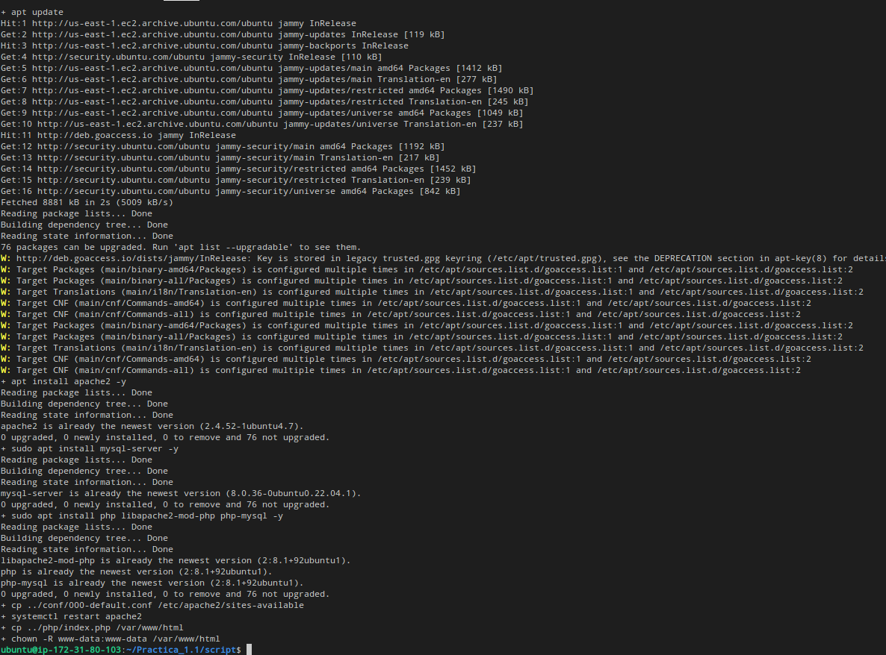

Practica_1.2
Instalacion pila LAMP
LAMP es el acrónimo usado para describir un sistema de infraestructura de Internet que usa las siguientes herramientas:
- Linux (Sistema Operativo)
- Apache (Servidor Web)
- MySQL/MariaDB (Sistema Gestor de Bases de Datos)
- PHP (Lenguaje de programación)
Gracias a aws tenemos una maquina RedHat en la que trabajar por lo que la parte de linux ya esta cubierta. Por eso estaremos trabajando en consola de linux.

Instalacion Aplicaciones
Siempre que vayamos a instalar algo tenemos que actualizar los paquetes
Actualizamos los paquetes
dnf update -y
Instalar Apache
Comando de instalacion Apache -y para que no te pida confirmacion.
dnf install httpd -y
Iniciamos el servicio apache
systemctl start httpd
Configuramos para que el servicio inicie automaticamente
systemctl enable httpd
Instalar MySQL
Comando de instalacion MySQL -y para que no te pida confirmacion.
dnf install mysql-server -y
Iniciamos el servicio sql
systemctl start mysqld
Configuramos para que el servicio inicie automaticamente
systemctl enable mysqld
Instalar PhP
Comando de instalacion de php, el -y para que no te pida confirmacion.
sudo dnf install php -y
Instalamos extension para mysql
sudo dnf install php-mysqlnd -y
Reiniciamos el servicio apache
sudo systemctl restart httpd
Copiar info
Nuestro info.php pasa a estar en la carpeta donde apache mira su html.
cp ../php/info.php /var/www/html
Modificar propietario de /var/www/html al de apache
Este comando es necesario para que apache funcione correctamente. www-data es el usuario de apache y le damos el propietario de la carpeta donde estan nuestros html.
chown -R www-data:www-data /var/www/html
Instalacion de Tools
Para que los servicios funcionen correctamente en RedHat tendremos que instalar una serie de herramientas
Actualizar paquetes
dnf update -y
Instalamos modulos php necesarios para phpmyadmin
dnf install php-mbstring php-zip php-json php-gd php-fpm php-xml -y
Reiniciamos servicio apache
systemctl restart httpd
Instalamos la utilidad wget
dnf install wget -y
Eliminamos descargas previas
Esto hara que no se nos acumulen descargas si utilizamos el script varias veces.
rm -rf /tmp/phpMyAdmin-latest-all-languages.zip
rm -rf /var/www/html/phpmyadmin
Descargamos el codigo fuente de phpmyadmin
wget https://files.phpmyadmin.net/phpMyAdmin/5.2.1/phpMyAdmin-5.2.1-all-languages.zip -P /tmp
Instalamos la utilidad unzip
dnf install unzip -y
Descomprimimos el codigo fuente de phpMyadmin en /var/www/html
unzip -u /tmp/phpMyAdmin-5.2.1-all-languages.zip -d /var/www/html
Renombramos el directorio
mv /var/www/html/phpMyAdmin-5.2.1-all-languages /var/www/html/phpmyadmin
Cambiamos propietario y el grupo a /var/www/html
chown -R apache:apache /var/www/html
Creamos archivo de configuracion a partir de el de ejemplo
cp /var/www/html/phpmyadmin/config.sample.inc.php /var/www/html/phpmyadmin/config.inc.php
Generamos un valor aleatorio de 32 caracteres para la variable blowfish_secret
RANDOM_VALUE=`openssl rand -hex 16`
Modificamos la variable blowfish_secret en el archivo de configuración
sed -i "s/\(\$cfg\['blowfish_secret'\] =\).*/\1 '$RANDOM_VALUE';/" /var/www/html/phpmyadmin/config.inc.php
Modificamos la variable blowfish_secret en el archivo de configuración
sed -i "/blowfish_secrets/a \$cfg\['TempDir'\] = '/tmp';" /var/www/html/phpmytadmin/config.inc.php
Eliminamos la base de datos de php anterior si existe
mysql -u root <<< "DROP DATABASE IF EXISTS phpmyadmin"
Importamos el script de creacion de base de datos de phpmyadmin
mysql -u root < /var/www/html/phpmyadmin/sql/create_tables.sql
Creamos usuario phpmyadmin
mysql -u root <<< "DROP USER IF EXISTS $PMA_USER@'%'"
mysql -u root <<< "CREATE USER $PMA_USER@'%' IDENTIFIED BY '$PMA_PASS'"
mysql -u root <<< "GRANT ALL PRIVILEGES ON $PMA_DB.* TO $PMA_USER@'%'"
